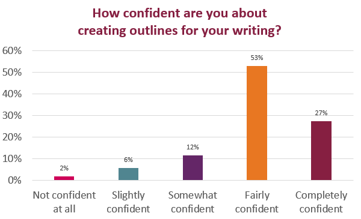

The Recommendation Report Outline is a Weekly Activity (not a Full Draft), but it is an important one.
One glance 👀 at your outline tells me if you understand the format for the Recommendation Report. In fact, I can usually predict whether your report will earn a Complete just by the details in your outline.
Here’s what you should include in your report outline:
Focus on creating parallel structures that lead the reader through the report in a clear, organized fashion.
Find the list of required sections on the Recommendation Report Criteria page. Check the table of contents in the Sample Report, Figure 18.8 in Markel & Selber, for examples of strong subheadings.
In the Week 10 Check-In Survey, the majority answering by the suggested due date felt fairly to completely confident about their outlining skills.

Your feedback told me that student examples are the most helpful resource, so I have added some example outlines to the assignment. They are repeated here as well:
Example content to replace
Here are some errors that students have made previously:
Your responses on the Week 10 Check-In Survey tell me that most of you (76%) are comfortable with integrating quotations in your writing. That’s great!
If you want a refresher on using outside sources, watch the How We Cite video on the left (from the UNC Writing Center). It provides a quick review of quoting, paraphrasing, summarizing, and generalizing. The video will take you less than two minutes and tell you everything you need to do, including when you need citations and quotation marks.
If you are worried about plagiarism, check out the tip sheet from UNC for more details. For more details on using quotations, visit their Quotations page.